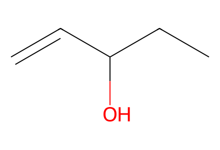
C=CC(O)CCMain routes and SI upstream preparation; named sideproducts, allene endgame and aerobic oxidation. Relative ring-face constraints from source chair drawings; absolute anchor (-)-methyl Wieland-Miescher ketone9. Facts compiled deterministically; independent review pending.
完整 JSON · 逐步 CSV · 路线序列 · SDF · HRMS 核对
| 事件 | 分子连接 | 报告产率 | Canonical reaction SMILES |
|---|---|---|---|
| A01 | pent-1-en-3-ol → S1 | S1: 78% | C=CC(O)CC>>C=CC(=O)CC |
| A02 | S1 + 2-methylcyclohexane-1,3-dione → S2 | S2: 96% | C=CC(=O)CC.CC1C(=O)CCCC1=O>>CCC(=O)CCC1(C)C(=O)CCCC1=O |
| A03 | S2 → 9 | 9: 54% | CCC(=O)CCC1(C)C(=O)CCCC1=O>>CC1=C2CCCC(=O)[C@]2(C)CCC1=O |
| A04 | 9 → S3 + S3-diketal | S3: 95% | CC1=C2CCCC(=O)[C@]2(C)CCC1=O>>CC1=C2CCCC3(OCCO3)[C@]2(C)CCC12OCCO2.CC1=C2CCCC3(OCCO3)[C@]2(C)CCC1=O |
| A05-feed | propionyl-chloride + ethylene → S4 | S4: 50% | C=C.CCC(=O)Cl>>CCC(=O)CCCl |
| A05 | S3 + S4 → S5 | not reported | CC1=C2CCCC3(OCCO3)[C@]2(C)CCC1=O.CCC(=O)CCCl>>CCC(=O)CC[C@@]1(C)C(=O)CC[C@]2(C)C1=CCCC21OCCO1 |
| A06 | S5 → S6 | S6: 87% | CCC(=O)CC[C@@]1(C)C(=O)CC[C@]2(C)C1=CCCC21OCCO1>>CCC(=O)CC[C@@]1(C)C(=O)CC[C@]2(C)[C@@H]1CCCC21OCCO1 |
| A07 | S6 → 10 | 10: 76% | CCC(=O)CC[C@@]1(C)C(=O)CC[C@]2(C)[C@@H]1CCCC21OCCO1>>CC1=C2CC[C@]3(C)[C@H](CCCC34OCCO4)[C@@]2(C)CCC1=O |
| B01 | 10 → 11 + S7 | 11: 94%; S7: 5% | CC1=C2CC[C@]3(C)[C@H](CCCC34OCCO4)[C@@]2(C)CCC1=O>>CC1=C2CC[C@]3(C)[C@H](CCCC34OCCO4)[C@@]2(C)CC[C@@H]1O.CC1=C2CC[C@]3(C)[C@H](CCCC34OCCO4)[C@@]2(C)CC[C@H]1O |
| B02-hydroxymethylation | Bu3SnH + formaldehyde → tributylstannylmethanol | tributylstannylmethanol: 86% | C=O.CCC[CH2][SnH]([CH2]CCC)[CH2]CCC>>CCC[CH2][Sn]([CH2]O)([CH2]CCC)[CH2]CCC |
| B02-feed | tributylstannylmethanol → 12 | not reported | CCC[CH2][Sn]([CH2]O)([CH2]CCC)[CH2]CCC>>CCC[CH2][Sn]([CH2]I)([CH2]CCC)[CH2]CCC |
| B02 | 11 + 12 → 13 | 13: 86% | CC1=C2CC[C@]3(C)[C@H](CCCC34OCCO4)[C@@]2(C)CC[C@@H]1O.CCC[CH2][Sn]([CH2]I)([CH2]CCC)[CH2]CCC>>CCC[CH2][Sn]([CH2]CCC)([CH2]CCC)[CH2]O[C@H]1CC[C@@]2(C)C(=C1C)CC[C@]1(C)[C@@H]2CCCC12OCCO2 |
| B03 | 13 → 14 + S8 | 14: 69%; S8: 25% | CCC[CH2][Sn]([CH2]CCC)([CH2]CCC)[CH2]O[C@H]1CC[C@@]2(C)C(=C1C)CC[C@]1(C)[C@@H]2CCCC12OCCO2>>CC1=C2CC[C@]3(C)[C@H](CCCC34OCCO4)[C@@]2(C)CCC1CO.CC1=CCC[C@]2(C)[C@H]3CCCC4(OCCO4)[C@]3(C)CC[C@]12CO |
| B03-alt | 13 → 14 + S8 + S9 | 14: 36%; S8: 31%; S9: 20% | CCC[CH2][Sn]([CH2]CCC)([CH2]CCC)[CH2]O[C@H]1CC[C@@]2(C)C(=C1C)CC[C@]1(C)[C@@H]2CCCC12OCCO2>>CC1=C2CC[C@]3(C)[C@H](CCCC34OCCO4)[C@@]2(C)CC=C1.CC1=C2CC[C@]3(C)[C@H](CCCC34OCCO4)[C@@]2(C)CCC1CO.CC1=CCC[C@]2(C)[C@H]3CCCC4(OCCO4)[C@]3(C)CC[C@]12CO |
| B04 | 14 → S10 | S10: 99% | CC1=CCC[C@]2(C)[C@H]3CCCC4(OCCO4)[C@]3(C)CC[C@]12CO>>CC1=CCC[C@]2(C)[C@H]3CCCC(=O)[C@]3(C)CC[C@]12CO |
| B05 | S10 → 15 | 15: 99% | CC1=CCC[C@]2(C)[C@H]3CCCC(=O)[C@]3(C)CC[C@]12CO>>CC1=CCC[C@]2(C)[C@H]3CCCC(=O)[C@]3(C)CC[C@]12CO[Si](C(C)C)(C(C)C)C(C)C |
| B06 | 15 → 17 | 17: 61% | CC1=CCC[C@]2(C)[C@H]3CCCC(=O)[C@]3(C)CC[C@]12CO[Si](C(C)C)(C(C)C)C(C)C>>CC1=CCC[C@]2(C)[C@H]3CCCC(=O)N[C@@]3(C)CC[C@]12CO[Si](C(C)C)(C(C)C)C(C)C |
| C01 | 17 → 19 | not reported | CC1=CCC[C@]2(C)[C@H]3CCCC(=O)N[C@@]3(C)CC[C@]12CO[Si](C(C)C)(C(C)C)C(C)C>>CC1=CCC[C@]2(C)[C@H]3CCCC(OCc4ccccc4)=N[C@@]3(C)CC[C@]12CO[Si](C(C)C)(C(C)C)C(C)C |
| C02 | 19 → S11 | not reported | CC1=CCC[C@]2(C)[C@H]3CCCC(OCc4ccccc4)=N[C@@]3(C)CC[C@]12CO[Si](C(C)C)(C(C)C)C(C)C>>CC1=CCC[C@]2(C)[C@@H](CCCC(=O)OCc3ccccc3)[C@](C)(N)CC[C@]12CO[Si](C(C)C)(C(C)C)C(C)C |
| C03 | S11 → 21 | not reported | CC1=CCC[C@]2(C)[C@@H](CCCC(=O)OCc3ccccc3)[C@](C)(N)CC[C@]12CO[Si](C(C)C)(C(C)C)C(C)C>>CC1=CCC[C@]2(C)[C@@H](CCCC(=O)OCc3ccccc3)[C@](C)(NC(=O)OCC[Si](C)(C)C)CC[C@]12CO[Si](C(C)C)(C(C)C)C(C)C |
| D01 | 21 → 21-acid | not reported | CC1=CCC[C@]2(C)[C@@H](CCCC(=O)OCc3ccccc3)[C@](C)(NC(=O)OCC[Si](C)(C)C)CC[C@]12CO[Si](C(C)C)(C(C)C)C(C)C>>CC1=CCC[C@]2(C)[C@@H](CCCC(=O)O)[C@](C)(NC(=O)OCC[Si](C)(C)C)CC[C@]12CO[Si](C(C)C)(C(C)C)C(C)C |
| D02 | 21-acid → 22 | not reported | CC1=CCC[C@]2(C)[C@@H](CCCC(=O)O)[C@](C)(NC(=O)OCC[Si](C)(C)C)CC[C@]12CO[Si](C(C)C)(C(C)C)C(C)C>>C=CC[C@H]1[C@](C)(NC(=O)OCC[Si](C)(C)C)CC[C@]2(CO[Si](C(C)C)(C(C)C)C(C)C)C(C)=CCC[C@]12C |
| D03 | 22 + 23 → 24 | 24: 71% | C=C(C)B1OC(C)(C)C(C)(C)O1.C=CC[C@H]1[C@](C)(NC(=O)OCC[Si](C)(C)C)CC[C@]2(CO[Si](C(C)C)(C(C)C)C(C)C)C(C)=CCC[C@]12C>>CC1=CCC[C@]2(C)[C@@H](C/C=C(/C)B3OC(C)(C)C(C)(C)O3)[C@](C)(NC(=O)OCC[Si](C)(C)C)CC[C@]12CO[Si](C(C)C)(C(C)C)C(C)C |
| D04 | 24 + 25 → 26 | 26: 90% | CC(C)[Si](C#CI)(C(C)C)C(C)C.CC1=CCC[C@]2(C)[C@@H](C/C=C(/C)B3OC(C)(C)C(C)(C)O3)[C@](C)(NC(=O)OCC[Si](C)(C)C)CC[C@]12CO[Si](C(C)C)(C(C)C)C(C)C>>CC1=CCC[C@]2(C)[C@@H](C/C=C(/C)C#C[Si](C(C)C)(C(C)C)C(C)C)[C@](C)(NC(=O)OCC[Si](C)(C)C)CC[C@]12CO[Si](C(C)C)(C(C)C)C(C)C |
| D05 | 26 → 4 | 4: 91% | CC1=CCC[C@]2(C)[C@@H](C/C=C(/C)C#C[Si](C(C)C)(C(C)C)C(C)C)[C@](C)(NC(=O)OCC[Si](C)(C)C)CC[C@]12CO[Si](C(C)C)(C(C)C)C(C)C>>C#C/C(C)=C\C[C@H]1[C@@](C)(N)CC[C@]2(CO)C(C)=CCC[C@]12C |
| E01 | 4 → 1 + 28 | 1: 58%; 28: 20% | C#C/C(C)=C\C[C@H]1[C@@](C)(N)CC[C@]2(CO)C(C)=CCC[C@]12C>>CC1=CCN2[C@@H]1C[C@H]1[C@@]2(C)CC[C@]2(CO)C(C)=CCC[C@]12C.CC1=CCN2[C@H]1C[C@H]1[C@@]2(C)CC[C@]2(CO)C(C)=CCC[C@]12C |
| E02 | 26 → 29 | 29: 90% | CC1=CCC[C@]2(C)[C@@H](C/C=C(/C)C#C[Si](C(C)C)(C(C)C)C(C)C)[C@](C)(NC(=O)OCC[Si](C)(C)C)CC[C@]12CO[Si](C(C)C)(C(C)C)C(C)C>>C#C/C(C)=C\C[C@H]1[C@](C)(NC(=O)OCC[Si](C)(C)C)CC[C@]2(CO[Si](C(C)C)(C(C)C)C(C)C)C(C)=CCC[C@]12C |
| E03 | 29 → 30 | not reported | C#C/C(C)=C\C[C@H]1[C@](C)(NC(=O)OCC[Si](C)(C)C)CC[C@]2(CO[Si](C(C)C)(C(C)C)C(C)C)C(C)=CCC[C@]12C>>CC(=C=CI)C1C[C@H]2[C@@](C)(CC[C@]3(CO[Si](C(C)C)(C(C)C)C(C)C)C(C)=CCC[C@]23C)N1C(=O)OCC[Si](C)(C)C |
| E04 | 30 → 31 | not reported | CC(=C=CI)C1C[C@H]2[C@@](C)(CC[C@]3(CO[Si](C(C)C)(C(C)C)C(C)C)C(C)=CCC[C@]23C)N1C(=O)OCC[Si](C)(C)C>>C=C=C(C)C1C[C@H]2[C@@](C)(CC[C@]3(CO[Si](C(C)C)(C(C)C)C(C)C)C(C)=CCC[C@]23C)N1C(=O)OCC[Si](C)(C)C |
| E05 | 31 → 32 + epi-32 | 32: 68% | C=C=C(C)C1C[C@H]2[C@@](C)(CC[C@]3(CO[Si](C(C)C)(C(C)C)C(C)C)C(C)=CCC[C@]23C)N1C(=O)OCC[Si](C)(C)C>>C=C=C(C)[C@@H]1C[C@H]2[C@@](C)(CC[C@]3(CO)C(C)=CCC[C@]23C)N1.C=C=C(C)[C@H]1C[C@H]2[C@@](C)(CC[C@]3(CO)C(C)=CCC[C@]23C)N1 |
| E06 | 32 → 1 | 1: 69% | C=C=C(C)[C@@H]1C[C@H]2[C@@](C)(CC[C@]3(CO)C(C)=CCC[C@]23C)N1>>CC1=CCN2[C@H]1C[C@H]1[C@@]2(C)CC[C@]2(CO)C(C)=CCC[C@]12C |
| E07 | 1 → 34 | not reported | CC1=CCN2[C@H]1C[C@H]1[C@@]2(C)CC[C@]2(CO)C(C)=CCC[C@]12C>>CC1=CCC[C@]2(C)[C@H]3Cc4c(C)ccn4[C@]3(C)CC[C@]12CO |
| F01 | S12 → S13 | S13: 44% | COc1ccc(COC[C@]23CC[C@@](C)(N)[C@H](CCCC(=O)OCc4ccccc4)[C@@]2(C)CCC=C3C)cc1>>COc1ccc(COC[C@]23CC[C@@](C)(NS(=O)(=O)c4ccc(C)cc4)[C@H](CCCC(=O)OCc4ccccc4)[C@@]2(C)CCC=C3C)cc1 |
| F02 | S13 → S14 | S14: 78% | COc1ccc(COC[C@]23CC[C@@](C)(NS(=O)(=O)c4ccc(C)cc4)[C@H](CCCC(=O)OCc4ccccc4)[C@@]2(C)CCC=C3C)cc1>>COc1ccc(COC[C@]23CC[C@](C)(NS(=O)(=O)c4ccc(C)cc4)[C@H](CCCC(=O)O)[C@@]2(C)CCC=C3C)cc1 |
| F03 | S14 → S15 | S15: 58% | COc1ccc(COC[C@]23CC[C@](C)(NS(=O)(=O)c4ccc(C)cc4)[C@H](CCCC(=O)O)[C@@]2(C)CCC=C3C)cc1>>COc1ccc(COC[C@]23CC[C@@](C)(NS(=O)(=O)c4ccc(C)cc4)[C@H](CCCC(=O)ON4C(=O)c5ccccc5C4=O)[C@@]2(C)CCC=C3C)cc1 |
| F04 | S15 → S16 | S16: 50% | COc1ccc(COC[C@]23CC[C@@](C)(NS(=O)(=O)c4ccc(C)cc4)[C@H](CCCC(=O)ON4C(=O)c5ccccc5C4=O)[C@@]2(C)CCC=C3C)cc1>>CCC[C@H]1[C@](C)(NS(=O)(=O)c2ccc(C)cc2)CC[C@]2(COCc3ccc(OC)cc3)C(C)=CC=C[C@]12C |
| G01 | 11 → S17 | S17: 58% | CC1=C2CC[C@]3(C)[C@H](CCCC34OCCO4)[C@@]2(C)CC[C@@H]1O>>CC1=C2CC[C@]3(C)[C@H](CCCC34OCCO4)[C@@]2(C)CC[C@@H]1OC(=O)c1ccc[cH-]1.[Fe+2].c1cc[cH-]c1 |
| G02 | 1 → 1-methiodide-cation | not reported | CC1=CCN2[C@H]1C[C@H]1[C@@]2(C)CC[C@]2(CO)C(C)=CCC[C@]12C>>CC1=CC[N+]2(C)[C@H]1C[C@@H]1[C@@]3(C)CCC=C(C)[C@@]3(CO)CC[C@]12C |
| control-CuIPr | 4 → 1 + 28 | 1: 36%; 28: 23% | C#C/C(C)=C\C[C@H]1[C@@](C)(N)CC[C@]2(CO)C(C)=CCC[C@]12C>>CC1=CCN2[C@@H]1C[C@H]1[C@@]2(C)CC[C@]2(CO)C(C)=CCC[C@]12C.CC1=CCN2[C@H]1C[C@H]1[C@@]2(C)CC[C@]2(CO)C(C)=CCC[C@]12C |
| control-Ag | 4 → 1 + 28 | 1: 27%; 28: 20% | C#C/C(C)=C\C[C@H]1[C@@](C)(N)CC[C@]2(CO)C(C)=CCC[C@]12C>>CC1=CCN2[C@@H]1C[C@H]1[C@@]2(C)CC[C@]2(CO)C(C)=CCC[C@]12C.CC1=CCN2[C@H]1C[C@H]1[C@@]2(C)CC[C@]2(CO)C(C)=CCC[C@]12C |

C=CC(O)CC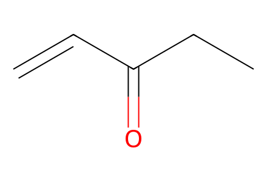
C=CC(=O)CC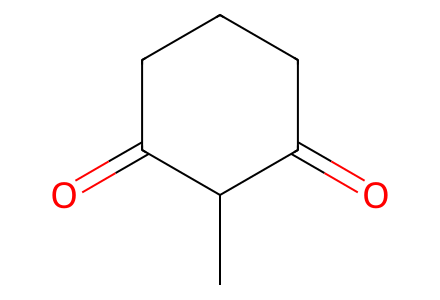
CC1C(=O)CCCC1=O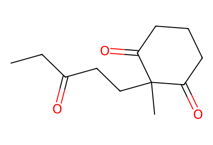
CCC(=O)CCC1(C)C(=O)CCCC1=O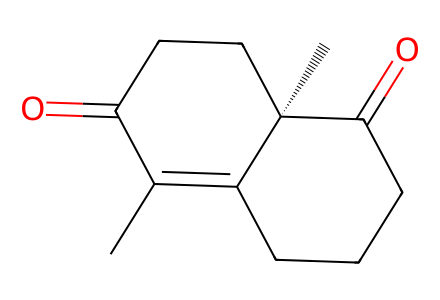
CC1=C2CCCC(=O)[C@]2(C)CCC1=O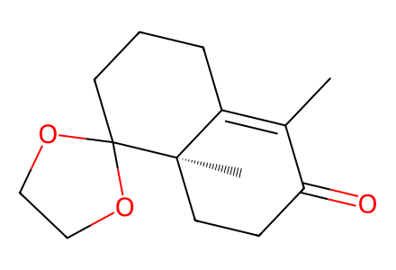
CC1=C2CCCC3(OCCO3)[C@]2(C)CCC1=O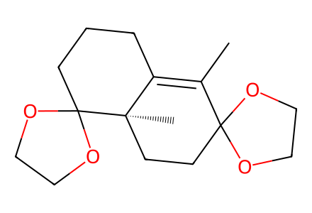
CC1=C2CCCC3(OCCO3)[C@]2(C)CCC12OCCO2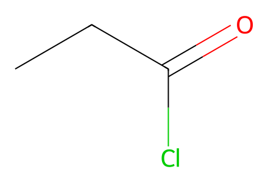
CCC(=O)ClC=C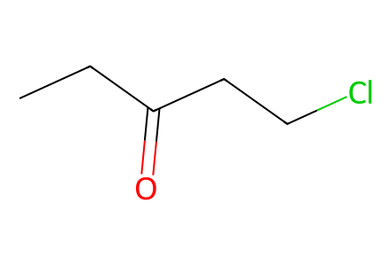
CCC(=O)CCCl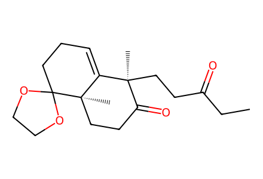
CCC(=O)CC[C@@]1(C)C(=O)CC[C@]2(C)C1=CCCC21OCCO1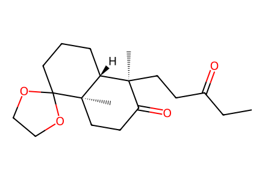
CCC(=O)CC[C@@]1(C)C(=O)CC[C@]2(C)[C@@H]1CCCC21OCCO1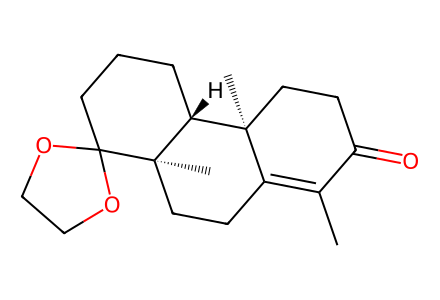
CC1=C2CC[C@]3(C)[C@H](CCCC34OCCO4)[C@@]2(C)CCC1=O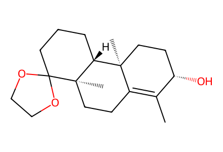
CC1=C2CC[C@]3(C)[C@H](CCCC34OCCO4)[C@@]2(C)CC[C@@H]1O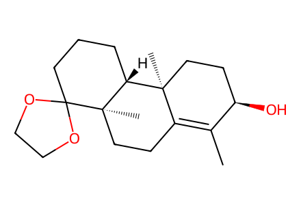
CC1=C2CC[C@]3(C)[C@H](CCCC34OCCO4)[C@@]2(C)CC[C@H]1O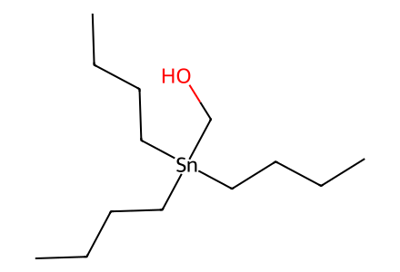
CCC[CH2][Sn]([CH2]O)([CH2]CCC)[CH2]CCC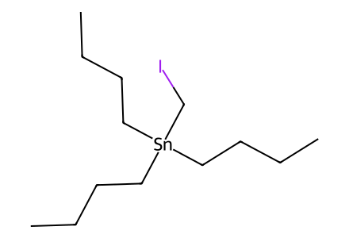
CCC[CH2][Sn]([CH2]I)([CH2]CCC)[CH2]CCC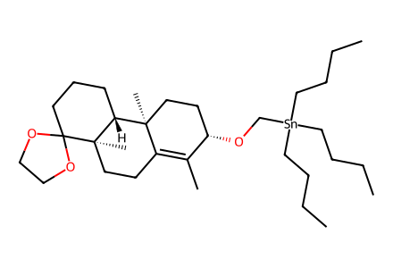
CCC[CH2][Sn]([CH2]CCC)([CH2]CCC)[CH2]O[C@H]1CC[C@@]2(C)C(=C1C)CC[C@]1(C)[C@@H]2CCCC12OCCO2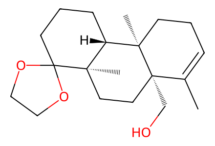
CC1=CCC[C@]2(C)[C@H]3CCCC4(OCCO4)[C@]3(C)CC[C@]12CO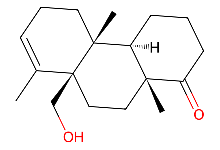
CC1=CCC[C@]2(C)[C@H]3CCCC(=O)[C@]3(C)CC[C@]12CO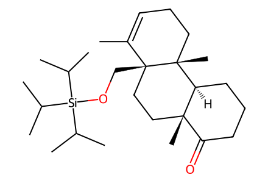
CC1=CCC[C@]2(C)[C@H]3CCCC(=O)[C@]3(C)CC[C@]12CO[Si](C(C)C)(C(C)C)C(C)C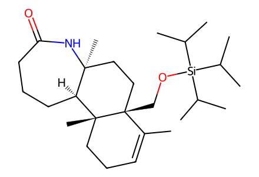
CC1=CCC[C@]2(C)[C@H]3CCCC(=O)N[C@@]3(C)CC[C@]12CO[Si](C(C)C)(C(C)C)C(C)C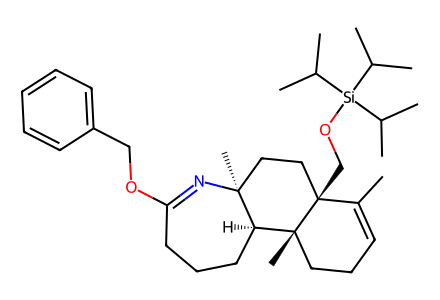
CC1=CCC[C@]2(C)[C@H]3CCCC(OCc4ccccc4)=N[C@@]3(C)CC[C@]12CO[Si](C(C)C)(C(C)C)C(C)C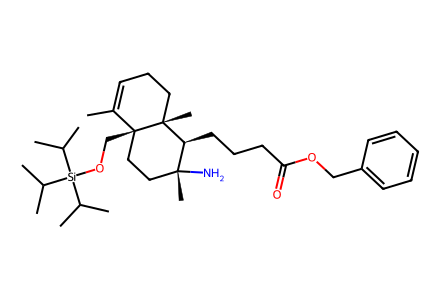
CC1=CCC[C@]2(C)[C@@H](CCCC(=O)OCc3ccccc3)[C@](C)(N)CC[C@]12CO[Si](C(C)C)(C(C)C)C(C)C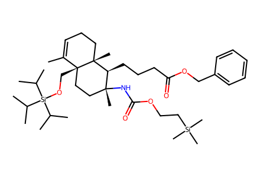
CC1=CCC[C@]2(C)[C@@H](CCCC(=O)OCc3ccccc3)[C@](C)(NC(=O)OCC[Si](C)(C)C)CC[C@]12CO[Si](C(C)C)(C(C)C)C(C)C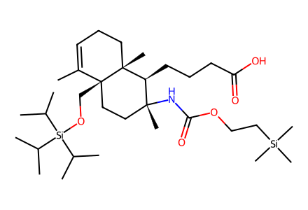
CC1=CCC[C@]2(C)[C@@H](CCCC(=O)O)[C@](C)(NC(=O)OCC[Si](C)(C)C)CC[C@]12CO[Si](C(C)C)(C(C)C)C(C)C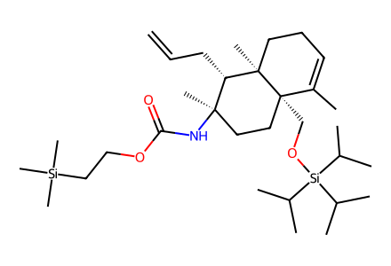
C=CC[C@H]1[C@](C)(NC(=O)OCC[Si](C)(C)C)CC[C@]2(CO[Si](C(C)C)(C(C)C)C(C)C)C(C)=CCC[C@]12C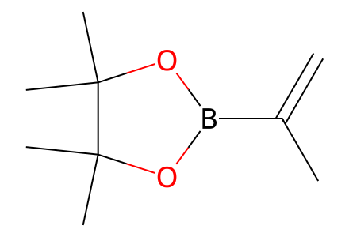
C=C(C)B1OC(C)(C)C(C)(C)O1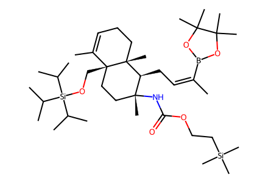
CC1=CCC[C@]2(C)[C@@H](C/C=C(/C)B3OC(C)(C)C(C)(C)O3)[C@](C)(NC(=O)OCC[Si](C)(C)C)CC[C@]12CO[Si](C(C)C)(C(C)C)C(C)C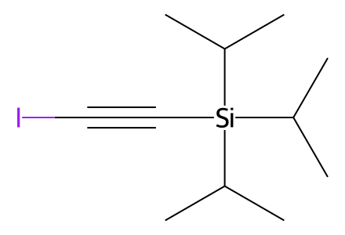
CC(C)[Si](C#CI)(C(C)C)C(C)C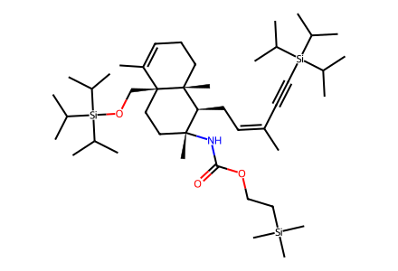
CC1=CCC[C@]2(C)[C@@H](C/C=C(/C)C#C[Si](C(C)C)(C(C)C)C(C)C)[C@](C)(NC(=O)OCC[Si](C)(C)C)CC[C@]12CO[Si](C(C)C)(C(C)C)C(C)C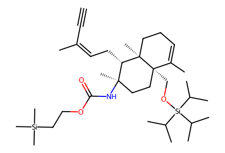
C#C/C(C)=C\C[C@H]1[C@](C)(NC(=O)OCC[Si](C)(C)C)CC[C@]2(CO[Si](C(C)C)(C(C)C)C(C)C)C(C)=CCC[C@]12C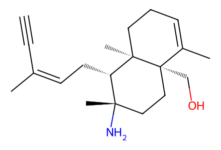
C#C/C(C)=C\C[C@H]1[C@@](C)(N)CC[C@]2(CO)C(C)=CCC[C@]12C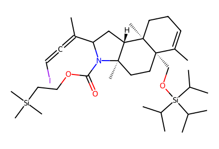
CC(=C=CI)C1C[C@H]2[C@@](C)(CC[C@]3(CO[Si](C(C)C)(C(C)C)C(C)C)C(C)=CCC[C@]23C)N1C(=O)OCC[Si](C)(C)C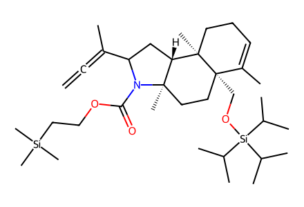
C=C=C(C)C1C[C@H]2[C@@](C)(CC[C@]3(CO[Si](C(C)C)(C(C)C)C(C)C)C(C)=CCC[C@]23C)N1C(=O)OCC[Si](C)(C)C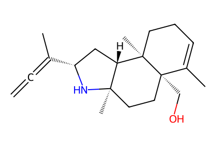
C=C=C(C)[C@@H]1C[C@H]2[C@@](C)(CC[C@]3(CO)C(C)=CCC[C@]23C)N1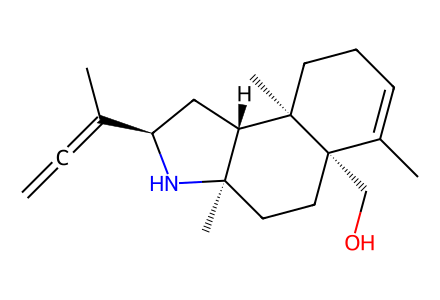
C=C=C(C)[C@H]1C[C@H]2[C@@](C)(CC[C@]3(CO)C(C)=CCC[C@]23C)N1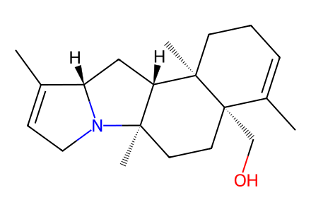
CC1=CCN2[C@H]1C[C@H]1[C@@]2(C)CC[C@]2(CO)C(C)=CCC[C@]12C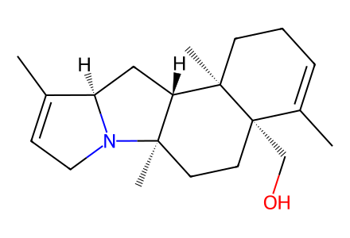
CC1=CCN2[C@@H]1C[C@H]1[C@@]2(C)CC[C@]2(CO)C(C)=CCC[C@]12C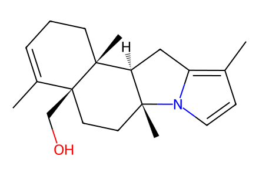
CC1=CCC[C@]2(C)[C@H]3Cc4c(C)ccn4[C@]3(C)CC[C@]12CO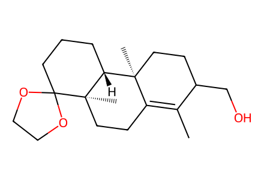
CC1=C2CC[C@]3(C)[C@H](CCCC34OCCO4)[C@@]2(C)CCC1CO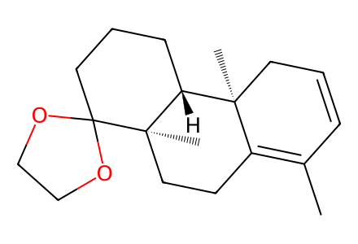
CC1=C2CC[C@]3(C)[C@H](CCCC34OCCO4)[C@@]2(C)CC=C1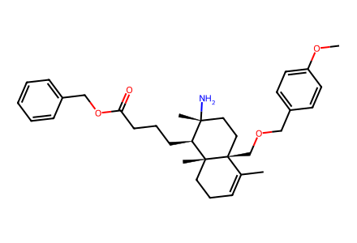
COc1ccc(COC[C@]23CC[C@@](C)(N)[C@H](CCCC(=O)OCc4ccccc4)[C@@]2(C)CCC=C3C)cc1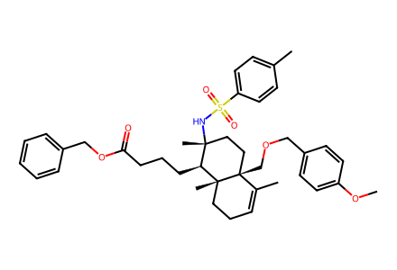
COc1ccc(COC[C@]23CC[C@@](C)(NS(=O)(=O)c4ccc(C)cc4)[C@H](CCCC(=O)OCc4ccccc4)[C@@]2(C)CCC=C3C)cc1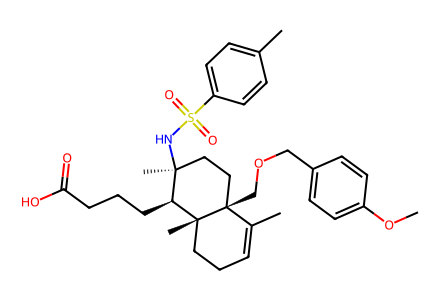
COc1ccc(COC[C@]23CC[C@](C)(NS(=O)(=O)c4ccc(C)cc4)[C@H](CCCC(=O)O)[C@@]2(C)CCC=C3C)cc1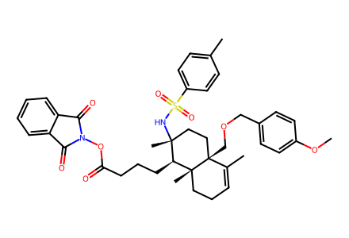
COc1ccc(COC[C@]23CC[C@@](C)(NS(=O)(=O)c4ccc(C)cc4)[C@H](CCCC(=O)ON4C(=O)c5ccccc5C4=O)[C@@]2(C)CCC=C3C)cc1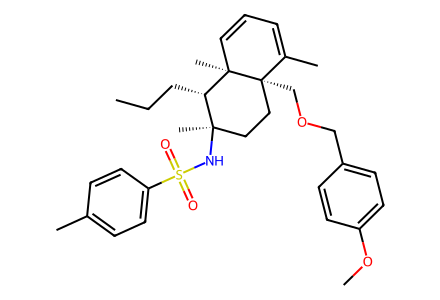
CCC[C@H]1[C@](C)(NS(=O)(=O)c2ccc(C)cc2)CC[C@]2(COCc3ccc(OC)cc3)C(C)=CC=C[C@]12C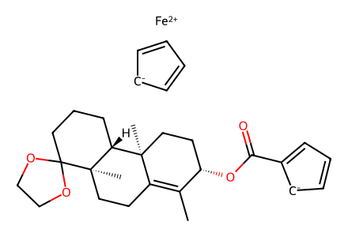
CC1=C2CC[C@]3(C)[C@H](CCCC34OCCO4)[C@@]2(C)CC[C@@H]1OC(=O)c1ccc[cH-]1.[Fe+2].c1cc[cH-]c1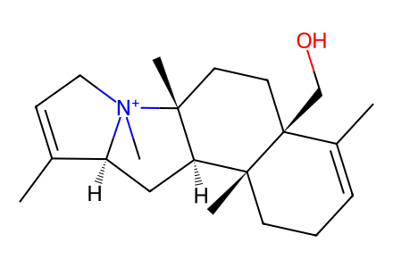
CC1=CC[N+]2(C)[C@H]1C[C@@H]1[C@@]3(C)CCC=C(C)[C@@]3(CO)CC[C@]12C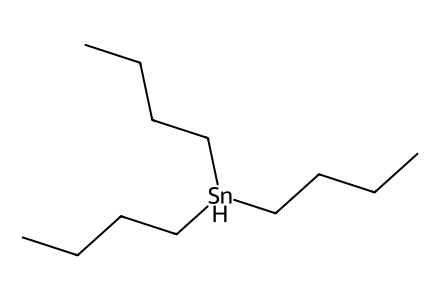
CCC[CH2][SnH]([CH2]CCC)[CH2]CCC
C=O